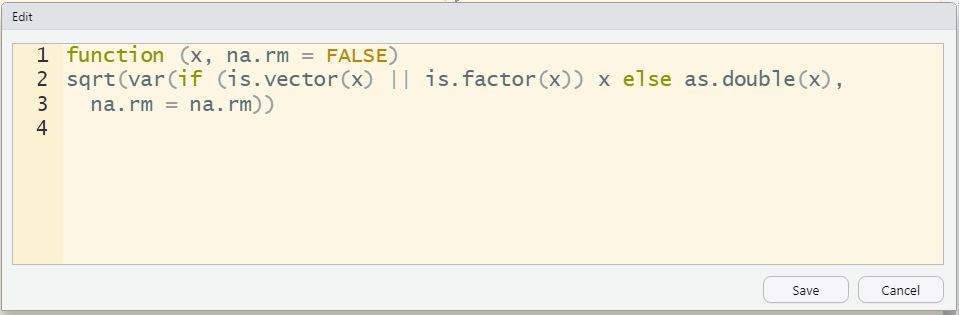

In practise, we always find the function in a published R package can not meet our needs very well. However, it’s not necessary to write a new function all over. It would be more convenient if we can modify the function directly. Let’s look at an example.
We check the source code of sd() function in the stats package. The source code is as following:
library(stats)
sdfunction (x, na.rm = FALSE)
sqrt(var(if (is.vector(x) || is.factor(x)) x else as.double(x),
na.rm = na.rm))
<bytecode: 0x0000000015871ae0>
<environment: namespace:stats>You can edit this function via trace(“function name”, edit = TRUE) directly in this window displays automatically as you like and save it.
trace("sd",edit=TRUE)
You won’t change the code in the published package but you can use the modified code locally until you reload the package.